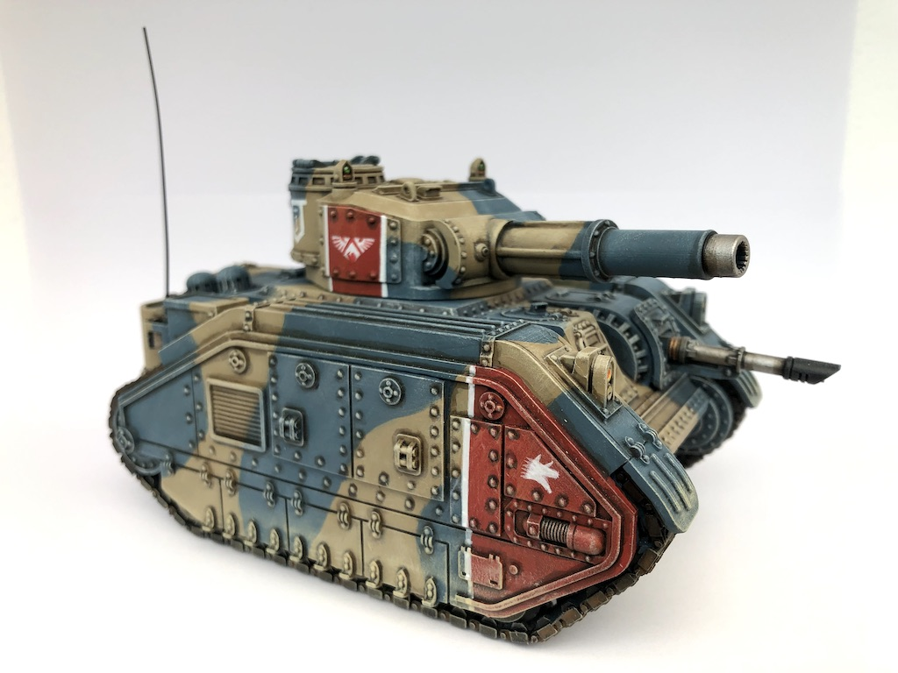

Kli-San Battle Tank
The Kli-San is the standard battle tank of the Krevarian Dragoons, but is also found in service with other formations and is even produced for export to allies and trustworthy mercenary groups. The original specification called for an easily-transportable and sturdy universal tank capable of operating in the most hostile environments. The final design is tall for a frontline tank, but its height results in a roomy interior with plenty of space for life support equipment, extended consumables storage, and even enough room for the crew to sleep in shifts inside the vehicle.
As a result of its sturdy and easily modifiable design, the Kli-San is the longest-lived tank in Krevarian service and is produced by most major fortress-cities of the Krevar March. As one might expect, this has led to a number of local variants and modifications to the original chassis over its long lifespan, and it is not uncommon for several marks of Kli-San to serve alongside each other.
Early Kli-San variants are distinguished by low return rollers, external stowage, and a secondary weapons turret in the front hull. The turret of the early marks was equipped with an independently-elevating secondary weapons station in a roughly cylindrical hull.
Middle production variants (the most widely produced to date) can be distinguished by their highly-placed return rollers - a choice made to further increase internal hull space, although that space is often taken up by sponson-mounted weapons. These variants also often trade the hull turret for a smaller gun mount with fewer shot traps, more vision ports for the driver, and a better-armored turret that moves the secondary mounts to the main turret mantlet.
Later production tracks often return to the lower return rollers, with the hull extending above them for additional storage space. Some additional modifications to the base design that are not in common service include a more armored glacis plate that dispenses entirely with hull-mounted weapons and a heavy turret originally designed for weapons testing (but whose extra space allows for easy crew handling for large weapons and extra ammunition storage).
You can download the STL here